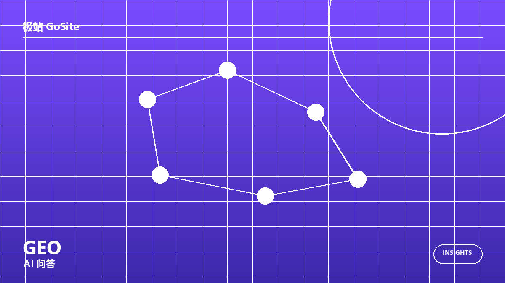
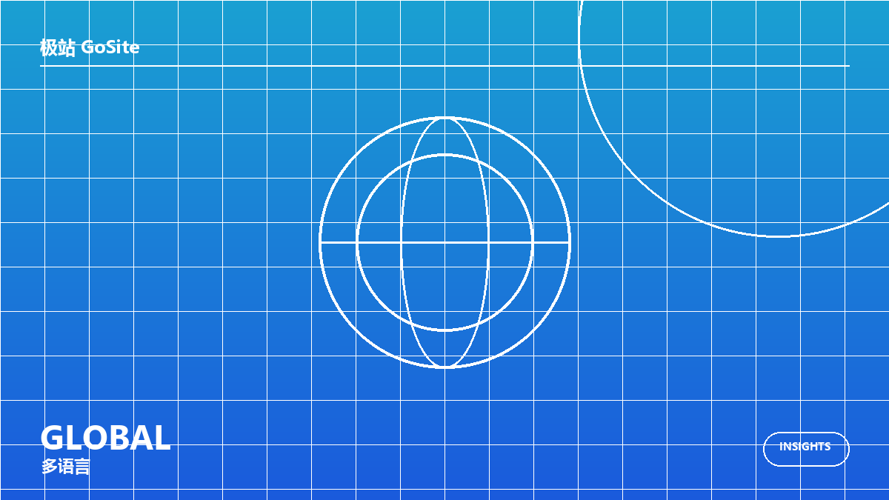

建站观察
建站观察纯静态站点为什么更容易被百度和谷歌读懂
从抓取、页面结构、站点地图与内容层级四个角度，说明纯静态官网在百度、谷歌与 AI 问答中的可读性优势。
阅读全文默认按时间排序，最新文章靠前；可按分类筛选，或翻页浏览全部内容。
建站观察从抓取、页面结构、站点地图与内容层级四个角度，说明纯静态官网在百度、谷歌与 AI 问答中的可读性优势。
阅读全文
建站观察解析面向生成式引擎的内容组织方式：可被直接引用的事实、问答结构与结构化标注如何配合。
阅读全文 建站观察
建站观察从品牌色、内容底色与强调色三层关系出发，说明不同类型机构官网的配色取舍与移动端注意点。
阅读全文
建站观察说明中英双语站点如何通过 hreflang、规范链接与目标市场用词，避免不同语言版本互相争抢收录。
阅读全文 案例讲解
案例讲解以乡情为纽带的异地商会门户，兼顾会员服务、资讯公开与线上商城。
案例讲解 案例讲解
案例讲解以岗位需求为先的 AI 人才实训基地转化型官网。
案例讲解